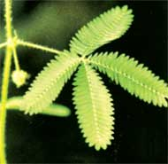

Рис. 5. Еж реагирует на прикосновение, свертываясь в клубок
Живые организмы тесно связаны с окружающей средой. Они получают из нее пищу, кислород, растут, развиваются, размножаются в ней. Поэтому живые организмы активно реагируют на изменения окружающей среды. Если толкнуть неживое тело, оно пассивно сдвинется с места или вы почувствуете пассивное сопротивление. Если же дотронуться до живого организма, он обычно активно реагирует: убегает, вздрагивает, замирает, свертывается в клубок (рис. 5). Живые организмы обладают раздражимостью, т. е. способностью реагировать на изменения окружающей среды.
Растения тоже реагируют на изменения окружающей среды, но медленнее, чем животные и человек. Например, с наступлением темноты закры
ваются, а утром вновь открываются цветки кислицы, складываются и расправляются ее листочки. Листья и стебли многих растений поворачиваются к свету, в пасмурный день закрываются соцветия одуванчика, от прикосновения складывает листочки мимоза стыдливая (рис. 6).

Рис. 6. Мимоза стыдливая реагирует на прикосновение, складывая листочки
Живые организмы построены из клеток. В состав клеток входят органические и неорганические вещества. Живые организмы питаются, растут, развиваются, дышат, размножаются, двигаются. Они обладают раздражимостью и активно реагируют на изменения окружающей среды.
- Что представляет собой живая природа?
- Перечислите признаки, характерные для живых организмов.
- Животные реагируют на тепло, холод, звуковые раздражители. Приведите примеры и опишите реакцию животных в каждом конкретном случае.
- Растения реагируют на тепло, холод, свет. Приведите примеры и опишите реакции растений на действие этих раздражителей.
- Понаблюдайте за кошкой (собакой, канарейкой, попугаем, рыбками в аквариуме). Какие признаки живых организмов они проявляют?